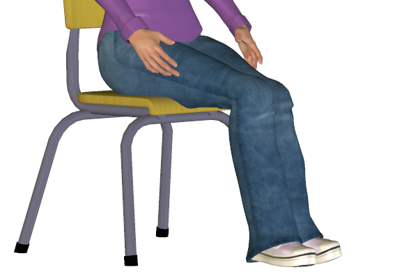

Bookmark added
-
leg direction, sitting - general
 interest, attentiveness (according to direction)Generally the direction of knees points towards where the person is interested in. The more prominent the sitting position is, the intense the feeling of attraction or repulsion is.
interest, attentiveness (according to direction)Generally the direction of knees points towards where the person is interested in. The more prominent the sitting position is, the intense the feeling of attraction or repulsion is. -
parallel legs together, sitting(mainly female)propernessThis kind of sitting style generally appears in women due to their clothes or upbringing style.
-
crossing legs, sitting - specific changeinterest or disinterest in direction of upper crossed kneeThe upper crossed knee points to the direction of interest. If it points towards a person it indicates interest or enthusiasm towards him. These signs are more indicative when the person firsts sits down and makes his intial positions in relation to the people around him.
-
American or figure-4 leg cross
 independent, stubbornThe figure 4 cross leg position is a confident posture to sit in. The crossed leg is like a protective barrier and so it also indicates some bit of stubborness.
independent, stubbornThe figure 4 cross leg position is a confident posture to sit in. The crossed leg is like a protective barrier and so it also indicates some bit of stubborness. -
ankle lock, sitting
 defensivenessMore naturally seen in women, this suggests being defensive or a suggestion of suppressing negative emotion.
defensivenessMore naturally seen in women, this suggests being defensive or a suggestion of suppressing negative emotion. -
knee buckle, standing
 under pressureUsually a knee buckle appears if the person is uncomfortable due to a burden or a responsibility.
under pressureUsually a knee buckle appears if the person is uncomfortable due to a burden or a responsibility. -
feet or foot direction or pointing
 foot direction indicates direction of interestKnees and feet tend to point towards the direction of interest. Usually can be observed while sitting in a group of people.
foot direction indicates direction of interestKnees and feet tend to point towards the direction of interest. Usually can be observed while sitting in a group of people. -
foot forward, standing
 directed towards dominant group memberIn a group of people the person standing with a foot forward generally seems to be the strongest member or leader of the group.
directed towards dominant group memberIn a group of people the person standing with a foot forward generally seems to be the strongest member or leader of the group. -
shoe-play(female)
 relaxation, flirting, sexualA sign usually seen in women. This indicates a feeling of relaxation or a sexual feel.
relaxation, flirting, sexualA sign usually seen in women. This indicates a feeling of relaxation or a sexual feel.